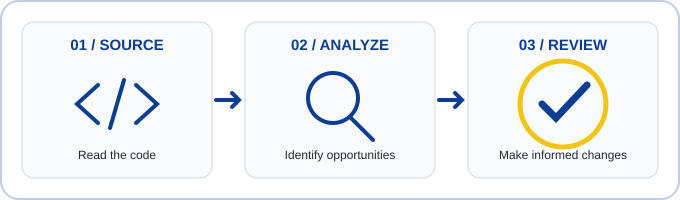

Code analysis
Review source code, identify improvement opportunities and understand what needs attention before shipping.
CodePolisher helps developers review, refine and understand their code with AI-assisted analysis.
Explore CodePolisher
Practical tools for cleaner, more maintainable software.
Review source code, identify improvement opportunities and understand what needs attention before shipping.
Explore potential issues and make informed improvements while keeping human judgment at the center of development.
Use a focused review process to build better habits, improve readability and spend more time creating.
Discover how CodePolisher can fit into your development workflow.